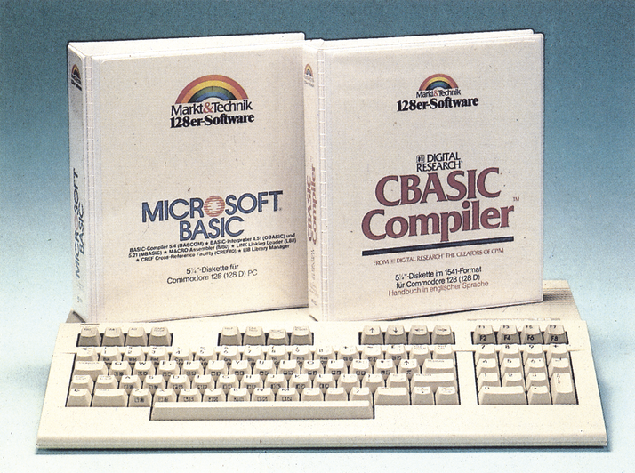

Basic unter CP/M: MS- und CBasic auf dem Commodore 128 PC
Sinnvolles Arbeiten unter CP/M beginnt entweder mit Programmen wie dBase II, Multiplan und Wordstar 3.0, oder wendet sich an den Anwender, der selbst programmieren möchte. Dies ist beispielsweise mit den beiden Basic-Compilern/Interpretern Microsoft-Basic und CBasic möglich.

Nachdem man den C 128 ausgepackt und eine Weile mit der CP/M-Systemdiskette herumexperimentiert hat, stellt man oft enttäuscht fest, was CP/M eigentlich ist: Ein Betriebssystem. Es stellt lediglich einen Grundstock dar, auf dem Programme wie etwa dBase II oder auch Compiler und Interpreter aufbauen. Da die Programmiersprache Basic sehr verbreitet ist, stellen wir Ihnen zwei Basic-Compiler/Interpreter vor und zeigen, was man mit ihnen anfangen kann.
MS-Basic — das Profisystem
Den MS-Basic-Interpreter und Compiler gibt es jetzt mit einigen Zusatzprogrammen vom Markt&Technik Verlag auf einer Diskette für den Commodore 128 PC. Die Zusatzprogramme, die den Wert des Interpreters fast übertreffen, bestehen aus einem Compiler, sowie einem Z80-Makroassembler der Spitzenklasse. Der Lieferumfang umfaßt ein etwa 700seitiges Begleitbuch sowie eine doppelseitig beschriebene Diskette. Auf der Diskette befinden sich drei unabhängige Programmsammlungen, der Basic-Interpreter in zwei Ausführungen, der Compiler mit Linker und Bibliothek sowie der Makroassembler mit Makrobibliothek und Crossreferenz-Programm.
Der Interpreter wird unter CP/M durch Eingabe von »MBASIC« gestartet. Er meldet sich dann mit der Angabe der frei verfügbaren Bytes. Hier erscheinen maximal etwa 35000 Bytes. Das erinnert stark an verflossen geglaubte C 64-Dimensionen. Ganz so schlimm, wie es scheint, ist es aber doch nicht, da vieles durch den sehr großen Sprachumfang des Interpreters aufgefangen wird. Hier spürt man, daß MS-Basic eine professionelle Sprache ist. Für die Dateiverwaltung finden sich sämtliche hierzu benötigten Befehle, aber auch Programmierprofis kommen auf ihre Kosten. Es wird zum Beispiel die Möglichkeit angeboten, mit Zahlen doppelter Genauigkeit zu rechnen. Befehle wie »IF..THEN..ELSE« oder »PRINT USING« gehören zum Standard. Insgesamt werden fast 140 Befehle und Funktionen angeboten (siehe hierzu auch die Befehls- und Funktionsübersicht in Tabelle 1).
| Reservierte Wörter in MS-Basic | |||
|---|---|---|---|
| ABS | ERASE | LOG | RIGTH$ |
| AND | ERL | LPOS | RND |
| ASC | ERR | LPRINT | RSET |
| ATN | ERROR | LSET | RUN |
| AUTO | EXP | MERGE | SAVE |
| CALL | FIELD | MID$ | SGN |
| CDBL | FILES | MKD$ | SIN |
| CHAIN | FIX | MKI$ | SPACE$ |
| CHR$ | FN | MKS$ | SPC |
| CINT | FOR | MOD | SQR |
| CLEAR | FRE | NAME | STEP |
| CLOSE | GET | NEW | STOP |
| COMMON | GOSUB | NEXT | STR$ |
| CONT | HEX$ | NOT | STRING$ |
| COS | IF | DCT$ | SWAP |
| CSAVE | IMP | ON | SYSTEM |
| CSNG | INKEY$ | OPEN | TAB |
| CVD | INP | OPTION | TAN |
| CVI | INPUT | OR | THEN |
| CVS | INPUT # | OUT | TO |
| DATA | INPUT$ | PEEK | TROFF |
| DEFDBL | INSTR | POKE | TRON |
| DEFINT | INT | POS | USING |
| DEFSNG | KILL | USR | |
| DEFSTR | LEFT$ | PUT | VAL |
| DEF USR | LEN | RANDOMIZE | VARPTR |
| DELETE | LET | READ | WAIT |
| DIM | LINE | REM | WEND |
| EDIT | LIST | RENUM | WHILE |
| ELSE | LLIST | RESET | WIDTH |
| END | LOAD | RESTORE | WRITE |
| EOF | LOC | RESUME | WRITE # |
| EQV | LOF | RETURN | XOR |
Als gravierendster Unterschied zum Basic-Interpreter des Commodore 128, der ja ebenfalls von Microsoft stammt, fällt auf, daß zwischen zwei Befehlen ein Zwischenraum stehen muß. Dies ermöglicht die Verwendung von beliebig langen Variablennamen, wobei jeder Buchstabe unterscheidungsrelevant ist. Es lassen sich dadurch Variablennamen verwenden, die direkt deren Funktion im Programm beschreiben. Viele Programmierer werden die einfache Editiermöglichkeit beim Editor des C 128 vermissen, denn im MS-Basic gibt es nur den »EDIT«-Befehl, der etwas umständlich zu handhaben ist. Das bietet bei genauerer Betrachtung jedoch einen großen Vorteil. Dem Programmierer wird es dadurch schwer gemacht, grundlegende Änderungen nachträglich in einem Programm durchzuführen und so dem gefürchteten »Spaghetticode« zu verfallen. Wer gleich eine Programmplanung vornimmt, braucht solche Änderungen nicht durchzuführen, das ganze Programm wird dadurch sehr übersichtlich. Stellt man allerdings Geschwindigkeitsvergleiche mit dem eingebauten Basic-Interpreter des C 128 an, so wird man enttäuscht. Die Ausführungszeit von MS-Basic-Programmen ist drei- bis viermal langsamer, als die der Programme im C 128-Modus. Dieser Umstand ist aber nicht dem Interpreter anzulasten, sondern dem CP/M-System des Commodore. Hier tritt wieder das alte Problem in Erscheinung, daß der Z80 im Commodore 128 sehr niedrig getaktet wird.
Abhilfe versprechen sowohl der umfangreiche Befehlssatz, der viele Unterprogramme erspart, sowie der mitgelieferte Compiler. Zusammen mit dem Linker verwandelt er Basic-Programme in direkt ausführbare Programme, die unter CP/M wie gewohnt durch Angabe des Namens aufgerufen und gestartet werden. Hierbei ist gegenüber den nicht compilierten Programmen ein maximaler Geschwindigkeitszuwachs von 30% zu verzeichnen. Bei ausgabeintensiven Programmen ist allerdings kaum eine Verbesserung zu erreichen, da die Geschwindigkeit hier stark vom Computer abhängt.
Die zweite Version des Interpreters ist eine früher datierte Ausgabe von MS-Basic. Die Schreibweise der Befehle gleicht der von Basic 7.0; Variablennamen sollen nur zwei Zeichen umfassen und es gelten die üblichen Einschränkungen, daß in ihnen zum Beispiel keine Schlüsselworte enthalten sein dürfen. Ebenso hat diese Version einen eingeschränkten Befehlsumfang. Mitgeliefert wird sie hauptsächlich, um Programme, die auf anderen CP/M-Computern mit diesem Interpreter geschrieben wurden, leichter übertragen zu können.
Gibt es Probleme, die sehr zeitintensiv sind, oder sollen Betriebssystemveränderungen gemacht werden, so wird man vom Microsoft-Programmpaket nicht im Stich gelassen. Hierfür bietet sich der ausgezeichnete Assembler an, der mit zum Besten gehört, was für Z80-Prozessoren derzeitig verfügbar ist. Dieser Assembler entschädigt für den unverständlichen Zug von Commodore, die im Handbuch erwähnten und beschriebenen Assemblerdienstprogramme MAC, LINK, LIB etc., auf einer extra für 80 Mark zu erwerbenden Diskette zu vertreiben. Hier sei gleich davor gewarnt, mit dem Microsoft-M80-Assembler Maschinensprache-Programmierung lernen zu wollen. Für diese Zwecke ist das ganze Paket viel zu umfangreich, und der Anfänger würde von den vielen Möglichkeiten nur verwirrt. Absolute Neulinge sollten auf einem einfacheren Assembler die ersten Schritte wagen. Der Profi aber bekommt ein Werkzeug in die Hand, das er nach kurzer Zeit nicht mehr missen möchte. Von Makro-Definition über Bibliotheken bis hin zur bedingten Assemblierung ist alles vorhanden, was zum Arbeiten mit Z80-Prozessoren notwendig ist. Leider stellt Microsoft keinen Editor zur Verfügung, so daß auf den mit der Commodore-Systemdiskette mitgelieferten Zeileneditor »ED« zurückgegriffen werden muß. Für größere Projekte ist aber ein großer Editor wie Wordstar aufgrund der einfacheren Bearbeitung von Programmen sehr zu empfehlen.
Ein wichtiges Werkzeug zur Fehlersuche wird mit dem Programm CREF mitgeliefert. Es bietet sich so die Möglichkeit, eine alphabetisch geordnete Liste aller im Assemblerlisting vorkommenden Variablen mit Zugriffsangabe anzulegen, ebenso sind Sprünge im Programm einfach nachzuvollziehen.
Der Einsatz von MS-Basic
Insgesamt betrachtet stellt das Microsoft-Basic Paket eine abgerundete Programmsammlung dar, die vielen Anwendern Nutzen bringt. Der Basic-Interpreter ist in Zusammenhang mit dem Compiler ideal, um Programme zu schreiben, die mit fertigen CP/M-Programmen zusammenarbeiten. So ist es zum Beispiel möglich, eine einfache Adreßverwaltung zu schreiben, die die Daten im Wordstar-Mailmerge-Format auf Diskette ablegt oder um Multiplan-Datenbestände grafisch auf Druckern auszuwerten. Sich das Programmpaket zu kaufen, um nur alternativ unter CP/M Basic zu programmieren, ist nicht sehr sinnvoll. Der eingebaute Interpreter ist billiger und in den meisten Fällen auch besser; ebenso tun sich Anfänger leichter, als mit MS-Basic, da beim Basic 7.0, wie oben erwähnt, Verbesserungen ganz einfach anzubringen sind.
Das Microsoft-Paket ist also mehr als Bindeglied zwischen vorhandenen CP/M-Programmen und zur Lösung individueller Problemstellungen unter CP/M anzusehen. In dieser Aufgabe muß es sich allerdings Vergleiche mit anderen Sprachen, wie zum Beispiel Turbo-Pascal, gefallen lassen. MS-Basic hat den großen Vorzug, Professionalität, Einfachheit und großen Bekanntheitsgrad der Sprache miteinander zu verbinden. Die Sprache Basic ist zwar eine einfach zu erlernende Computersprache, das Paket bietet aber auch wachsenden Ansprüchen etwas, wobei hier insbesondere der Assembler gemeint ist. Durch dessen hervorragende Qualität ist die Programmsammlung auch als Maschinensprache-Entwicklungspaket zu sehen. Die Hauptteile können mit dem Assembler geschrieben werden, Test- und Überwachungsprogramme in MS-Basic, wobei durch den Compiler kaum Geschwindigkeitseinbußen hingenommen werden müssen.
Leider stellt das mitgelieferte Handbuch hohe Ansprüche an die Englischkenntnisse des Benutzers. Nur die ersten 160 Seiten des etwa 700 Seiten starken Druckwerks sind in Deutsch und bieten eine kurze Übersicht über die Möglichkeiten von MS-Basic. Möchte man ausführliche Informationen über Befehle oder Besonderheiten, so muß man dies im englischen Teil nachlesen, der dafür sehr ausführlich gehalten ist.
Fazit: Das Haupteinsatzgebiet des MS-Basic-Paketes von Microsoft liegt beim erfahrenen CP/M-Anwender. Dieser Benutzerkreis bekommt ein Programmentwicklungspaket zur Verfügung gestellt, das auch professionelle Wünsche befriedigt. Mit diesem Werkzeug besitzt der Programmierer alles, was er zur optimalen Nutzung des Betriebssystems CP/M benötigt. Unerfahrenen Computerbesitzern kann man MS-Basic nicht uneingeschränkt empfehlen, es besteht leicht die Gefahr, von den vielfältigen Möglichkeiten »überrollt« zu werden. Aber gerade durch seine Vielfältigkeit schließt MS-Basic eine wichtige Lücke in der Programmsammlung für den C 128.
CBasic – Komfort ist alles
Mit CBasic bietet Markt&Technik einen weiteren Basic-Compiler an, der vor allem durch die komfortable Programmierumgebung hervorsticht. Auf der Diskette befinden sich der Compiler, ein Linker und ein Programm zur Verwaltung von Modulen. Was es damit auf sich hat, erfahren Sie später.
Um nun ein CBasic-Programm zu schreiben, muß erst einmal der Quelltext erfaßt werden. Hier muß auf den CP/M-Editor zurückgegriffen werden, dessen Leistung allerdings nicht mehr dem heutigen Standard entspricht. Wer über anwendungsfreundlichere Editoren verfügt, zum Beispiel Wordstar, sollte diese auf jeden Fall benutzen.
Zum Basic-Interpreter des C 128-Modus weist CBasic einige Unterschiede auf, die sofort positiv auffallen. So braucht der Programmierer keine Zeilennummern mehr zu verwenden, sondern kann direkt Labels, also konkrete Namen, für die Sprungziele angeben. Natürlich können auch die herkömmlichen Zeilennummern verwendet werden. Des weiteren ist es möglich, in CBasic Funktionen zu definieren. Aber das kennen wir ja schon vom C 128-Modus, werden Sie jetzt vielleicht sagen. Die CBasic-Funktionen, und das ist der große Unterschied, können mehrzeilig sein und wie Unterprogramme behandelt werden. Von herkömmlichen Unterprogrammen (GOSUB) unterscheiden sie sich durch die Möglichkeit, Variablen an die Funktion zu übergeben, ähnlich den Funktionen in der Sprache C. Die Variablen, die dann in der Funktion benutzt werden, sind lokal, das heißt, sie gelten nur für den Bereich der Funktion.
Bei der Variablenbehandlung wäre noch eine Besonderheit von CBasic erwähnenswert. Zwar definiert der Compiler jede Variable bei ihrem ersten Aufruf im Programm selbst, doch besteht auch die Möglichkeit, den Variablentyp am Programmanfang festzulegen. Es können Integer-, String- und Real-Variablen deklariert werden. Der Vorteil dieses Verfahrens liegt im Weglassen der näheren Variablenbezeichnung (%,$) im weiteren Programmverlauf.
Doch damit ist der Sprachschatz von CBasic (Tabelle 2) noch nicht erschöpft. Mit einem speziellen Befehl können auch Overlays, also Programme, die sich gegenseitig nachladen, erzeugt werden. Dem nachgeladenen Programm übergibt CBasic alle Variable, die mit der Anweisung »COMMON« deklariert wurden. Auch diese Variable können vorher mit den bereits bekannten Anweisungen auf ihren Typ voreingestellt sein. Um die ganze Sache noch abzurunden, existieren selbstverständlich noch Anweisungen wie »WHILE« und »IF ... THEN ... ELSE«. Des weiteren verfügt CBasic noch über einige Funktionen zum Ermitteln von Variablenadressen und der Manipulation von Zahlenvariablen.
| Reservierte Wörter in CBasic | ||||
|---|---|---|---|---|
| ABS | ERR | LE | PUBLIC | STRING$ |
| AND | ERRL | LEFT$ | PUT | SUB |
| AS | ERROR | LEN | RANDOMIZE | TAB |
| ASC | ERRX | LET | READ | TAN |
| ATTACH | EQ | LINE | READONLY | THEN |
| ATN | EXP | LOCK | REAL | TO |
| BUFF | EXTERNAL | LOCKED | RECL | UCASE$ |
| CALL | FEND | LOG | RECS | UNLOCK |
| CHAIN | FLOAT | LPRINTER | REM | UNLOCKED |
| CHR$ | FOR | LT | REMARK | USING |
| CLOSE | FRE | MATCH | RENAME | VAL |
| COMMAND$ | GE | MFRE | RESTORE | VARPTR |
| COMMON | GET | MID$ | RETURN | WEND |
| CONCHAR% | GO | MOD | RIGHT$ | WHILE |
| CONSOLE | GOSUB | NE | RND | WIDTH |
| CONSTAT% | GOTO | NEXT | SADD | XOR |
| COS | GT | NOT | SGN | %CHAIN |
| CREATE | IF | ON | SHIFT | %DEBUG |
| DATA | INITIALIZE | OPEN | SIN | %EJECT |
| DEF | INKEY | OR | SIZE | %INCLUDE |
| DELETE | INP | OUT | SQR | %LIST |
| DETACH | INPUT | PEEK | STEP | %NOLIST |
| DIM | INT | POKE | STOP | %PAGE |
| ELSE | INT% | POS | STR$ | |
| END | INTEGER | STRING | ||
Besonders hervorzuheben sind auch die umfangreichen Befehle zur Dateiverwaltung. Voll integriert ist die Behandlung von relativen Dateien. Es ist sogar möglich, eine Datei bei der Eröffnung beispielsweise als »Nur-Lese-Datei« zu deklarieren, so daß ein versehentliches Überschreiben von Daten von vorneherein ausgeschlossen ist. Alle übrigen, bereits aus dem C 128-Modus bekannten Standardfunktionen, sind ebenfalls fast vollständig enthalten.
Sozusagen Hand in Hand arbeiten hier Compiler und Quellcode, denn im Basic-Text können Befehle eingefügt werden, die die Compilierung direkt beeinflussen. So kann für die Ausgabe eines Listings auf einem Drucker ein Seitenvorschub eingefügt, die Seitenlänge festgelegt oder das Listing von Programmteilen ganz unterdrückt werden. Über eine solche Anweisung ist es möglich, weitere Quellcodes in den bestehenden einzubinden und mitzucompilieren. Einen Debugger können Sie auf dieselbe Art und Weise aktivieren. Um die Aus- und Eingabe während des Compilierens zu manipulieren, beispielsweise um Dateien von anderen Laufwerken einzubinden oder ein Listing auf Drucker zu erzeugen, können dem Compiler beim Aufruf verschiedene Parameter mitgeteilt werden, die dann die gewünschten Effekte erzeugen. Dasselbe gilt auch für den Linker, der nach dem Compilieren noch die nötigen Module für ein ablauffähiges COM-File anfügt. Für diese Module existiert auf der Diskette ein Programm, mit dem man selbsterstellte Module für den Einsatz mit dem Linker aufbereiten kann (LIB). Dadurch hat man also die Möglichkeit, den Compiler individuell umzugestalten.
Nach den doch etwas langwierigen Prozeduren des Compilierens und Linkens ist die Ausführungszeit des fertigen Programms geradezu herzerfrischend. Getestet wurde dies mit einem Programm, das einen Zähler von 1 bis 10000 hochzählt. Das Compilieren und Linken dauerte zusammen zirka drei Minuten, während die Ausführungszeit bei 0,5 Sekunden liegt.
Als bestens geeignet erweist sich der CBasic-Compiler für den Anwendungsprogrammierer, der sich mehr in Richtung kommerzieller Anwendung, wie etwa dem kaufmännischen Bereich, bewegt. Die Möglichkeit der strukturierten Programmierung mit Hilfe von Funktionen und Schleifen stellt selbst die Ansprüche von professionellen Programmierern zufrieden. Der große Befehlssatz, das zum Großteil ausführliche, aber nur in Englisch vorliegende Handbuch und der respektable Preis von 174 Mark machen den CBasic-Compiler zu einem unersetzlichen Helfer für den CP/M-Basic-Programmierer.
(Guido Weckwerth/bj/rf)Info: MS-Basic (Microsoft), Vertrieb: Markt&Technik Verlag, Hans-Pinsel-Str. 2, 8013 Haar bei München, Preis: 199 Mark
CBasic (Digital Research), Vertrieb: Markt&Technik Verlag, Hans-Pinsel-Str. 2, 8013 Haar bei München, Preis: 174 Mark